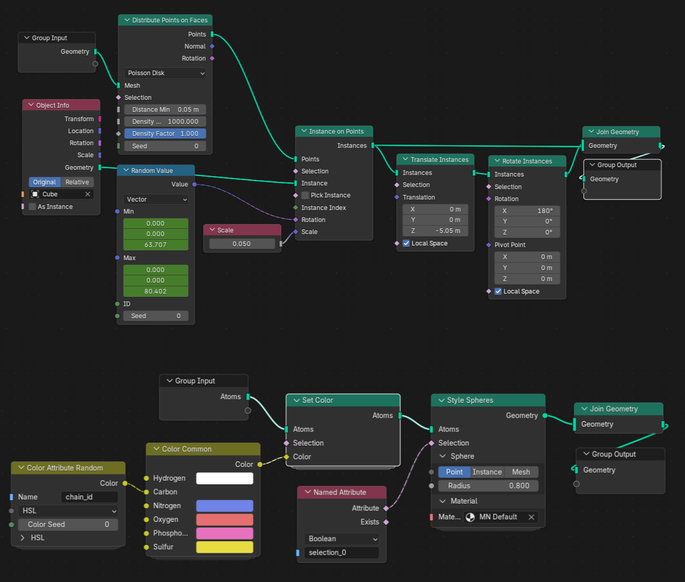
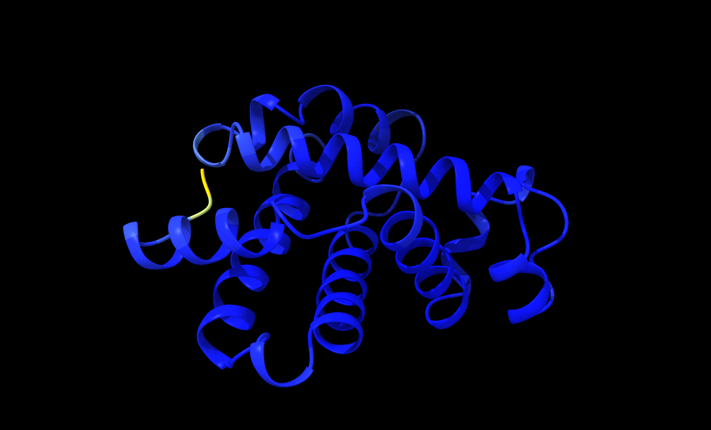
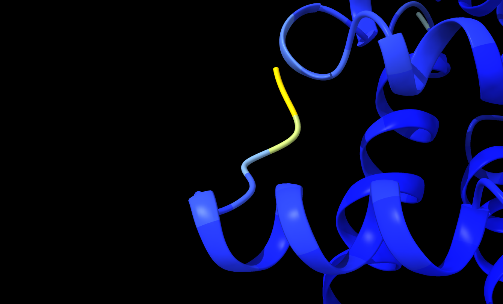

Conformational Morphing & Procedural Modeling of F1Fo-ATP Synthase
This project visualizes the structural transitions of mammalian F1Fo-ATP synthase across three distinct functional states (PDB: 5ARE, 5ARI, 5FIL). After generating a continuous coordinate trajectory via conformational morphing, the structural data was integrated into Blender using the Molecular Nodes plugin. To ground the protein in its biological environment, I built a procedural lipid bilayer using Geometry Nodes, texturing the membrane with a dielectric shader utilizing subsurface scattering to mimic the realistic translucency of lipid heads. The entire scene is enclosed in a low-density light blue volumetric box to simulate a crowded intracellular matrix. To produce a seamless portfolio loop, the animation parameters were synchronized so that the coordinate states, the procedural membrane fluctuations, and the volumetric noise fields interpolate perfectly across the loop boundary without any visible cuts.


Blender Note: Ensuring a seamless loop with ambient volumetrics requires mapping the texture noise coordinates over a continuous circular path in 4D space over time. This keeps the environment completely stable when transitioning between the final frame and frame zero.

Subsurface Scattering & Molecular Dynamics of the Human TrkA Receptor
For this project, I animated a 500-frame molecular dynamics simulation of the human TrkA receptor protein embedded inside a fluid lipid bilayer membrane. To get a highly organic, translucent look for the lipids without sacrificing performance, I customized the underlying node tree to route the atom coordinates through an optimized mesh-instancing pipeline. The simulation is rendered inside a high-contrast studio scene with heavy edge backlighting and a reflective, high-roughness floor plane to highlight the moving silhouettes of the protein loops and the thermal fluctuations of the surrounding membrane matrix.
Blender Note: Native Cycles point clouds can break down when calculating manual subsurface scattering, turning entirely black. Swapping the point instances out for low-poly Ico Spheres (Subdivisions: 1) paired with a 'Set Shade Smooth' node creates a water-tight 3D mesh volume that allows subsurface light absorption to render properly without running out of memory.
Procedural Membrane Animation of the Human Secretin Receptor
For this project, I wanted to show a protein actually sitting inside a cell membrane instead of just floating in empty space. I used the raw coordinates for the human secretin receptor complex (PDB: 6WZG) and referenced the OPM database to figure out exactly how the protein aligns with the lipid bilayer. Instead of using a heavy physics simulation, I built the entire membrane procedurally using Blender Geometry Nodes to scatter the individual lipid molecules over a wavy surface. To make the scene look dynamic, I set up the nodes to rapidly spin the lipid tails on their local Z-axes, creating a fast-moving, fluid look for the hydrophobic core while keeping the main protein anchored. I did the final render in Cycles to get clean lighting and realistic depth through the membrane layer.

Blender Note: Using Geometry Nodes lets me animate the membrane fluid dynamics without lagging the viewport. Spinning the tail vertices locally simulates kinetic motion in the hydrophobic core while keeping the rest of the layout completely stable.
Cinematic Glass Render of Lactoferrin
To try out a more artistic, cinematic rendering style, I imported human lactoferrin (PDB: 1LFG) from UCSF ChimeraX into Blender. Instead of using a basic plastic look, I designed a custom dielectric glass shader for the structure to see how light would refract and transmit through the internal folds. I set up a dark studio environment with two bright rim lights to catch the outer edges of the alpha-helices and beta-sheets, then rendered the animation using the Cycles engine for clean light behavior and path-tracing reflections.

Blender Note: Moving structural data into a ray-tracing engine like Cycles lets me play around with complex glass physics and studio lighting, making the molecular structure look like a modern sculpture.
Visualizing Imatinib Binding to ABL1 Kinase
I wanted to look into how cancer drugs physically fit into their target proteins, so I pulled the crystal structure of the ABL1 kinase domain bound with the drug imatinib (Gleevec) from the PDB database (2HYY). Using UCSF ChimeraX, I isolated the active site to find the specific connection points between the molecule and the protein. I used the measurement tools to find a crucial hydrogen bond of 3.014Å between the drug and the Thr315 residue, which is the exact spot that gets messed up in patients who develop resistance to the treatment.


Key Finding: Measured a 3.014Å hydrogen bond between the Thr315 residue and imatinib using ChimeraX tools, mapping out the precise target location where resistance mutations typically happen.
AlphaFold Confidence Mapping on Hemoglobin Beta
I wanted to see how reliable AlphaFold predictions are across different parts of a structure, so I imported the model for the human hemoglobin beta subunit (UniProt: P68871) into UCSF ChimeraX. I set up the model to color-code itself based on its pLDDT confidence scores. The main body of the protein turned completely blue, showing super high prediction confidence (over 90) across the helices. However, the very tip of the N-terminal tail lit up with low-confidence colors (under 70), showing how the model struggles a bit with floppy, loose ends that usually need other proteins around to snap into place.


Key Finding: The core globin bundle scored above 90 for high confidence, while the first five residues at the N-terminus dropped below 70, highlighting the flexible, unstructured regions of the prediction model.